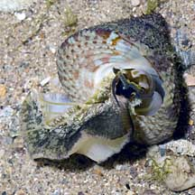
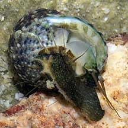
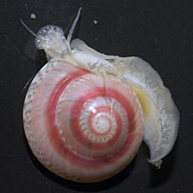

|
|
| shelled snails text index | photo index |
| Phylum Mollusca > Class Gastropoda |
| Top
shell snails Family Trochidae updated Sep 2020 Where seen? These snails with top-shaped shells are commonly seen on many of our rocky shores including man-made sea walls. Top shell snails are not as well adapted to dry conditions as the Nerites and Periwinkles, and are thus generally found closer to the low water mark. Features: 3-15cm. Shell thick. Some are shaped like a conical top, the spinning toy. The operculum is circular with concentric rings usually clearly visible. It is made of a thin, horn-like material and is flexible. This allows the snail to withdraw deep into the coils of the shell, hopefully out of the reach of crab pincers. The shell is sometimes covered in encrusting lifeforms. In some species, the body mantle of the living animal is fringed with long tentacles. Sometimes confused with the Turban snail (Family Turbinidae) which has a shell with more distinct whorls and a thick, chalky operculum. While many Top snails have a more conical shell and a thin operculum made of a horn-like material. Here's more on how to tell apart turban and top shell snails. |
 The Spotted top shell snail has a large foot with tentacles fringing the body mantle. Labrador, May 05 |
 The Toothed top shell snail also has a large foot with tentacles fringing the body mantle. St. John's Island, Aug 05 |
 Tiny button snails have a long mobile foot and tentacles fringing the body mantle. East Coast, Aug 12 |
| What do they eat? Top shells graze the algae that thrive
on the rocks, scraping this off with their radula. Human uses: The shell is lined with mother-of-pearl. Larger species are collected for food and their shells that are made into ornaments and pearl buttons. This is still a significant industry in some Pacific Islands and effort is being made to establish a susbtainable method of farming these snails. Status and threats: Button snails are listed as 'Vulnerable' on the Red List of threatened animals of Singapore. |
| Some Top shell snails on Singapore shores |
| Family
Trochidae recorded for Singapore from Tan Siong Kiat and Henrietta P. M. Woo, 2010 Preliminary Checklist of The Molluscs of Singapore. in red are those listed among the threatened animals of Singapore from Davison, G.W. H. and P. K. L. Ng and Ho Hua Chew, 2008. The Singapore Red Data Book: Threatened plants and animals of Singapore. ^from WORMS. +Other additions (Singapore BIodiversity Records, etc)
|
Links
References
|